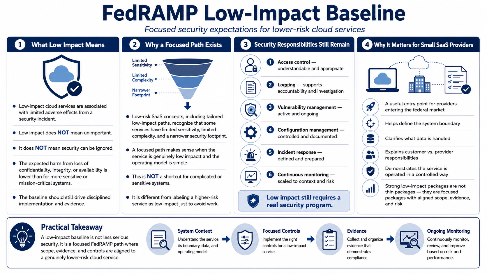

Low and LI-SaaS Concepts
Connecting to LMS... Progress: in progress

Narration
Low-impact cloud services are generally associated with limited adverse effects from a security incident. That does not mean the service is unimportant, and it definitely does not mean security can be ignored. It means the expected harm from a loss of confidentiality, integrity, or availability is lower than it would be for more sensitive or mission-critical systems. The baseline should still drive disciplined implementation and evidence.
Low-risk SaaS concepts, including tailored low-impact paths, are meant to recognize that some software services have limited sensitivity, limited complexity, and a narrower security footprint. A focused path can make sense when the service is genuinely low impact and the operating model is simple enough to support reduced assessment complexity. That is different from pretending a complicated or sensitive system is low impact to avoid work.
Even in lower-impact scenarios, common responsibilities remain. Access control should be understandable. Logging should support accountability and investigation at the level appropriate for the service. Vulnerability management should be active. Configuration should be managed. Incident response should be defined. Continuous monitoring should not disappear; it should be scaled to the system context and risk. Low impact still requires a real security program.
For small SaaS providers entering the federal market, the low-impact conversation can be a useful starting point. It encourages the team to define the boundary, identify what data is handled, clarify customer and provider responsibilities, and prove that the service is operated in a controlled way. The best lower-impact packages are not thin packages; they are focused packages where scope, evidence, and risk are clearly aligned.